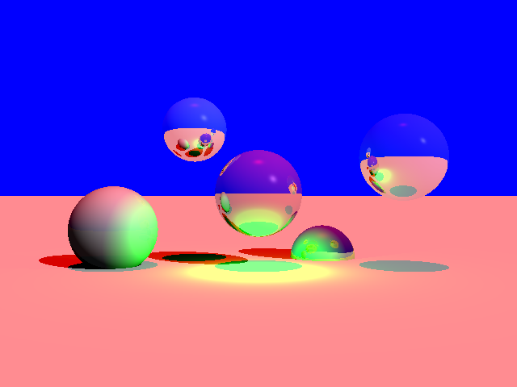
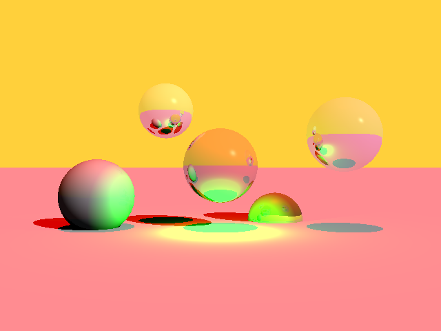
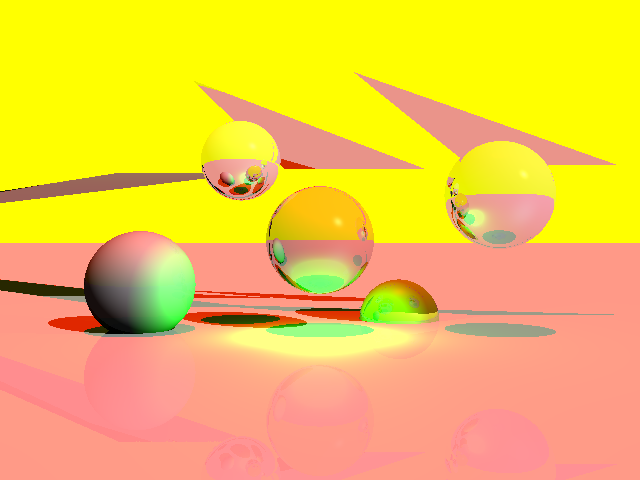
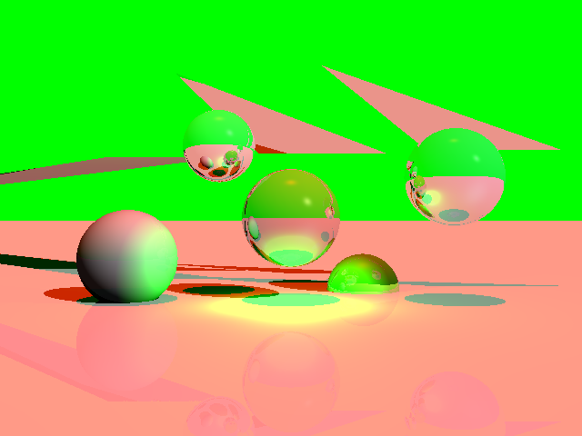
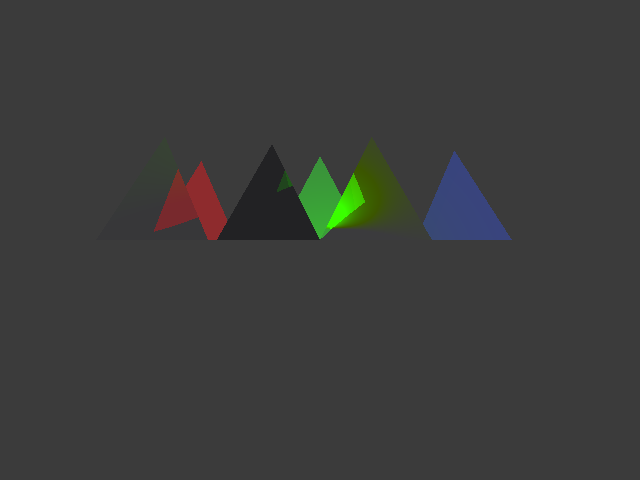

Arbitrary Scenes – Spheres, Triangles & Background color change
Rendered scenes with mixed shapes, colors and materials.

Original image





📁 Download Project Files (Google Drive)
This project extends my ray tracer to support inclusion of triangles, planes, complex lighting, and optical properties of materials. The main idea was to simulate how light travels in a scene and how it interacts with different surfaces to produce realistic images.
I started by setting up a virtual camera that shoots rays through every pixel of the image. Each ray checks if it hits an object — like a sphere, triangle, or plane — and then calculates what color that point should be based on the lights and materials in the scene.
I used the Phong lighting model to handle how light affects the objects. That means every surface gets some ambient light (overall brightness), diffuse light (how light spreads depending on the angle), and specular light (the shiny reflections you see on glossy materials).
I also added different types of lights to the renderer — point lights, directional lights (like sunlight), and spotlights that create focused beams. Shadows were tricky, but I managed them by casting extra “shadow rays” from each surface point toward the lights to see if something blocks the light.
For reflective materials, I implemented recursive reflections, so when a ray hits a shiny surface, it spawns another ray in the reflection direction. This makes mirrors and glossy effects look realistic, but I had to set a maximum recursion depth to stop it from bouncing forever. But I failed to implement refraction part of the project.
To make the images smoother and reduce jagged edges, I implemented two sampling methods:
Jittered sampling, which adds a bit of randomness to each ray so edges look smoother.
Adaptive sampling, which adds more samples in areas where there’s a lot of color or brightness change.
I also attempted to implement motion blur and depth of field,but couldn't get good results. The main challenge I faced was related to building good lighting model and implementation of optical properties of materials.
At the end, I used the stb_image library to save all the final renders as PNG files. I also added timing code using C++’s chrono library to measure how long each render took. Some parts in header files and txt files have been modified to fullfill and test the project requirements.
The below images explores effect of different camera placements, resolutions and aspect ratios.
Original image
Resolution: 600:400
Resolution: 1024:768
Resolution: 1920:1080
Rendered scenes with mixed shapes, colors and materials.
Original image
The images demonstrate material variety and optical properties.

Original image with just spotlight
Image with directional, spot, point and ambient lighting

Original image with no sampling
Jittered supersampling
Adaptive sampling
Jittered supersampling render time (slower than adaptive)
Adaptive sampling render time
The spheres renders illustrate how max recursion depth affects realism.As we decrease the depth, we stop tracing the ray earlier, which eliminates the effect of reflections and refractions in the scene.
Unfortunately, I couldn't submit project on time. I wanted to spare some time for Halloween and make fun memories with friends. Here is me as Lara Croft :)